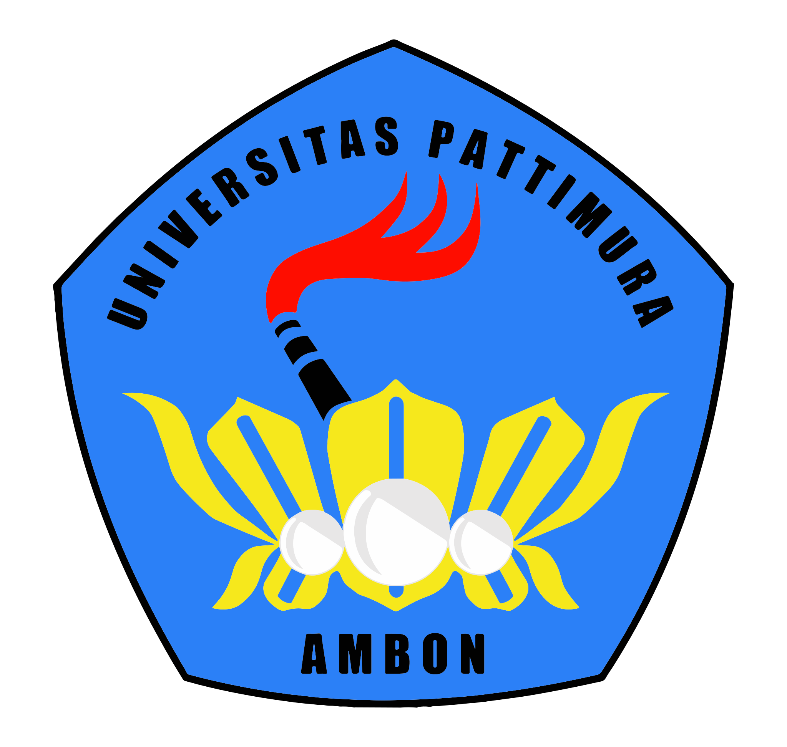

Career Path & Alumni Success
Jalur Karier Lulusan PLS
Panduan Masa Depan Lulusan Prodi Pendidikan Luar Sekolah FKIP UNPATTI

Panduan Masa Depan Lulusan Prodi Pendidikan Luar Sekolah FKIP UNPATTI
E-Katalog ini adalah kompas untuk membantu alumni merancang masa depan. Kami percaya setiap lulusan PLS memiliki potensi besar untuk menjadi agen perubahan di masyarakat.
Lulusan PLS adalah tenaga profesional yang ahli dalam pengembangan SDM dan pemberdayaan masyarakat.
Menjadi Program Studi yang unggul dalam menghasilkan tenaga profesional di bidang Pendidikan Luar Sekolah yang mampu mengembangkan SDM dan memberdayakan masyarakat, khususnya di wilayah kepulauan.
Lulusan PLS adalah tenaga profesional yang ahli dalam pengembangan SDM dan pemberdayaan masyarakat. Berikut adalah peta karier yang dapat Anda tempuh:
Kenali alumni PLS UNPATTI yang telah berhasil meniti karier dan memberikan dampak positif bagi masyarakat.
Ingin diskusi karier? Hubungi kami!
Scan untuk bergabung ke Grup Alumni